Chapter 4 Results
4.1 Result relating to admission
The first thing we care about is the admission. Did the pandemic influence the number of admission? Is admission rate related to the gender and institution type? Did the pandemic influence the admission standard? In this part, we plotted four graphs and got some insights relating to the admission.
4.1.1 Number of admission according to gender and institution type in 2017-2021
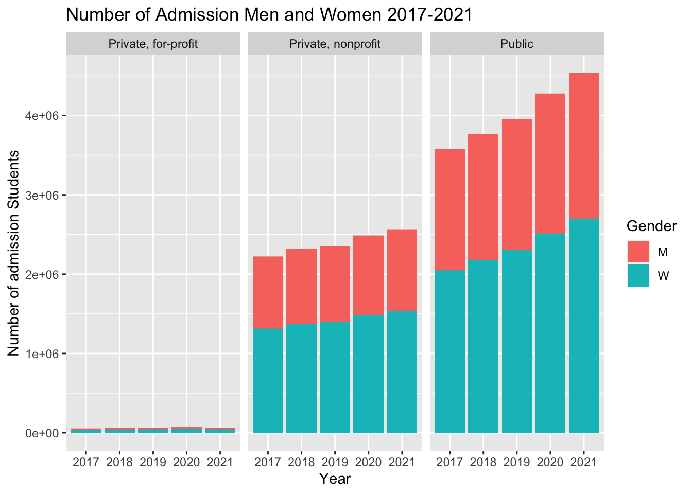 From the graph of admission number, we found that the public institution has the highest total admission number and the private for-profit institution has the lowest total admission number. Observing the data of different years, we can find that the total admission number increased over 2017 to 2021 for public and private non-profit institution, while the total admission number for private for-profit institution decreased in 2021. In the view of different genders, we can see that the total number of admission woman is larger than that of admission man for all types of institution in every year.
4.1.2 Admission rate according to institution type in 2017-2021
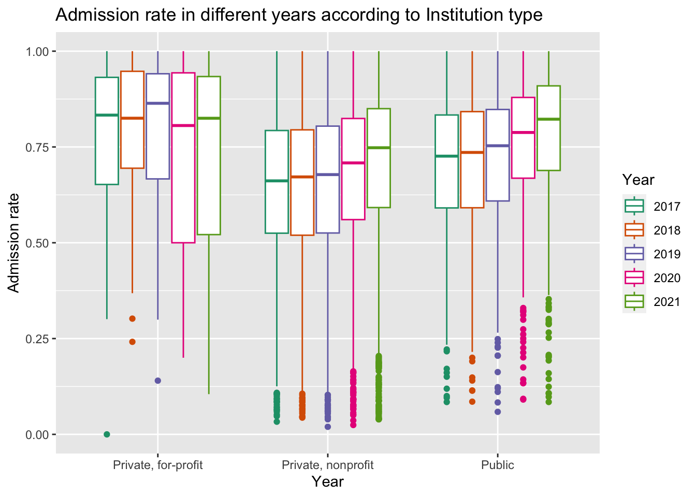
We take the admission number divided by the application number as the admission rate. We first group the data according to institution type to see whether the admission rate is relating to the institution type. From this graph, we find that private for-profit institution always has the highest admission rate while the private nonprofit institution has the lowest admission rate. Observing the data in different years, we can see that the median admission rate for private nonprofit institution and public institution increased over the years, and the growth is particularly marked in 2021. while for private for-profit institution, the data fluctuated. Compared with private for-profit institution, private non-profit and public institution have lower variance and more outliers.
4.1.3 Admission rate according to gender and institution type in 2017-2021
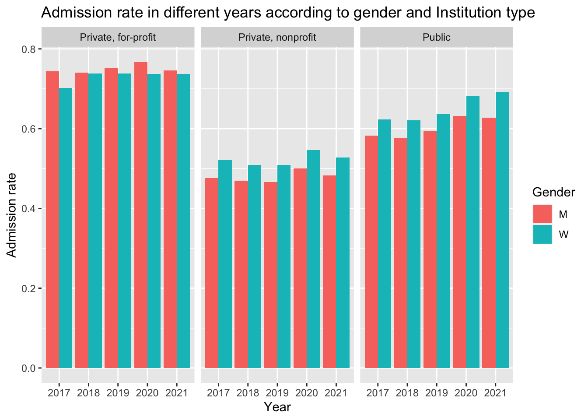
Besides the institution type, we also consider the gender as a factor of admission rate. For private nonprofit and public institution, the woman admission rate is always higher than man. On the contrary, for private for-profit institution, we find that the woman admission rate is lower than man admission rate. From this observation, we can infer that woman applicants have higher opportunity to be admitted for public and private non-profit institution.
4.1.4 SAT mean scores according to subjects and institution type in 2017-2021
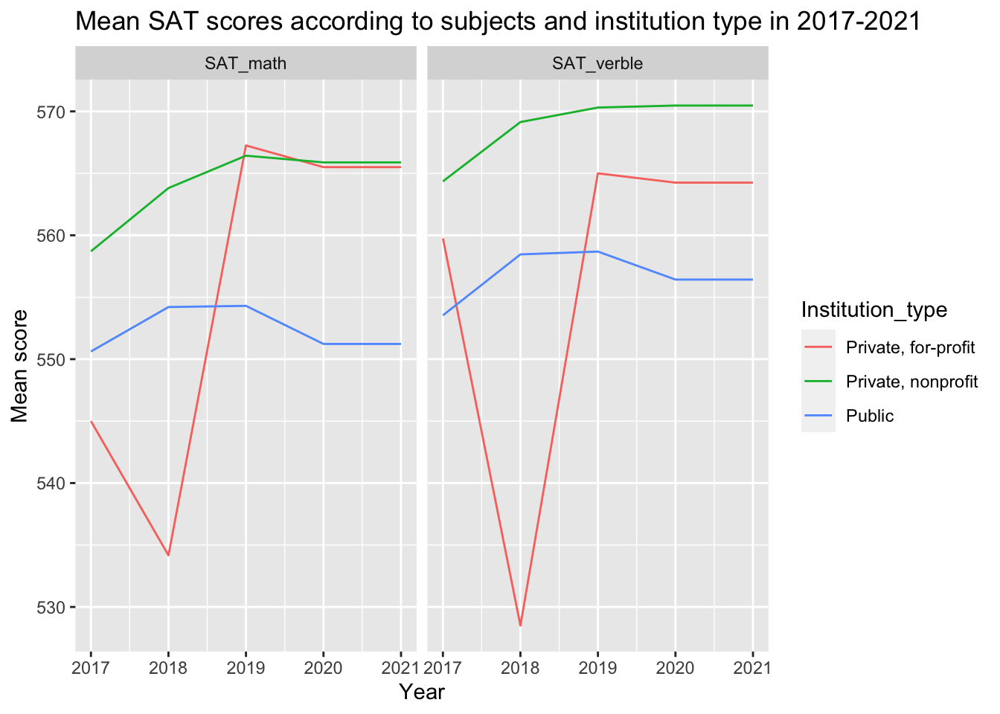 We use mean SAT score as a standard of admission difficulty. From the graph, we can see that the admitted students have higher mean SAT verble scores than mean SAT math scores. Observing the line for different institution, we find that private nonprofit institution always have higher SAT requirement than public institution. Compared to the other two types of institution, the standard for private for-profit has pretty large variance in different years.
4.2 School Aid over the pandemics
US institutions are known for its notoriously high tuition fee. The team had observed inflation and ecnomic recession during the pandemics and suspect such event would severely compromise financial capability of US institutions. Therefore, the team was interested to explore change pattern of institutional grant schools provide to their students as an effort schools put to help students through the difficult time.
The team explored two parts of students grand. One is the percentage of students who actually received the institutional grant, and another part involves the change of average amount of grant schools provided to their student in each US state over the pandemics. ### Percentage of Grant Receiver Over the pandemics
The team divide schools based on institutional type, and for each school, the team binned its percentage of grant receiver into 4 bins in percentile. The team than drawn histogram for percentage of grant receiver faceting over institution type, and the plot is drawn for 5 years from 2017 to 2021.
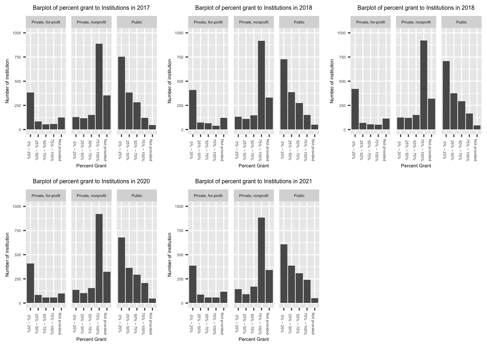
The “Not provided” means the school does not provide data abvout their institutional grant. This does not necessarily mean their provide no grant at all.
The team did not observe significant change of grant receiver percentage for US institutions over 2017-2021. However, The team observe significant difference of receiver percentage across different types of institutions.
The for profit institutions has highest proportion of schools providing grant to only 0-25% of their students. The team inferred that the tuition is the major source of for profit institutions, and therefore, regardless of presence of pandemics, those institutions would not provide funds to most of their students.
The non-profit institutions has highest proportion of schools providing grand to 75-100% of their students. In practice, non-profit institutions receive significant donation from high achieving alumnus, which supports distribution of institutional grants even in times of economic recession. Therefore, for students admitted to non-profit schools, majority of them still enjoy the grant from institutions. Given expensive tuition by non-profit schools, institutional grant is crucial in guaranteeing enrollment of prospective students.
The public schools has highest variation over the percent of grant receiver. Unlike non-profit private schools that generally provide funds to most of their students and for-profit private schools that generally does not provide funds to most of their students, the distribution of schools with different percentage of grant receiver is more smooth. However, the mode for public school grant receiver percentage is still 0-25%. Whether this is because students generally receive government grant to support their education or public schools has lower bar of admission with limited fund provided is a question worth exploring. The high variability of percentage of grant receiver for public school is a potential topic for future exploration. ### Changeof Average amount of institutional grant over the pandemics
The team plotted change of average institutional grant provided by schools in each state in a choropleth map. The map on top is the change of average grant amount from 2017 to 2019, which is regarded as “change before the pandemics”. The map on bottom is the change of average grant amount from 2019 to 2021, which is regarded as “change after the pandemics”.
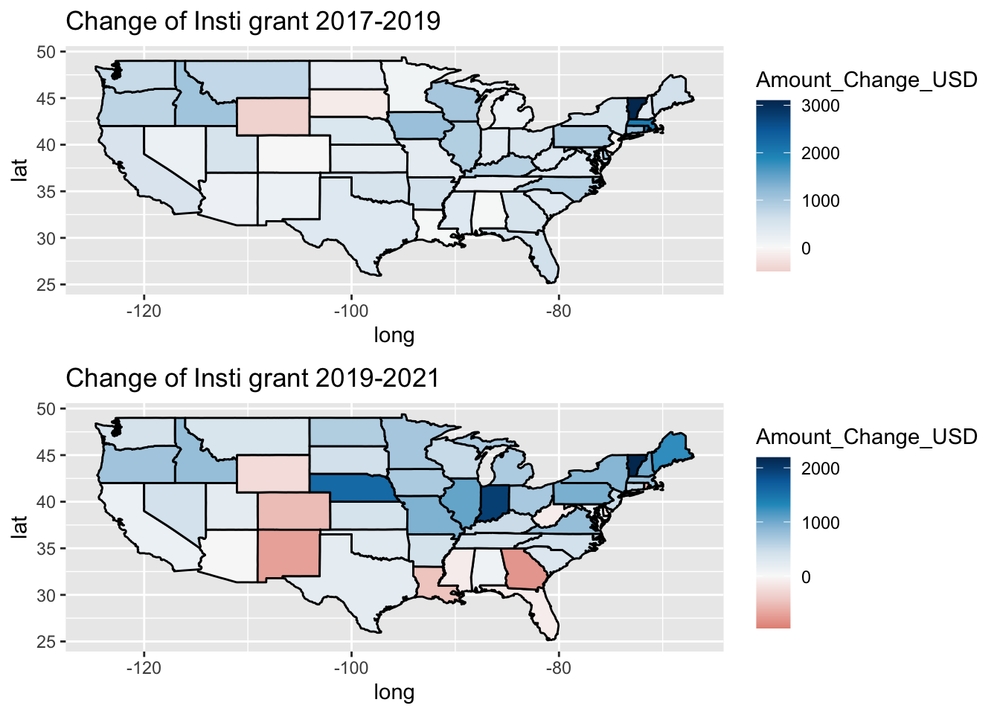
The team observed an intriguing polarizing pattern in the change of institutional grand before and after the pandemics. The white is the middle value that indicates no change. The red hue indicates the average amount of institutional grand in that state had decreased between the years shown in plot title; the darker the red hue the more decrease in average institution grand of the colored state. The blue hue indicates that the average amount of institutional grand in that state had increased between the years shown in plot title; the darker the hue the more increase in the grant.
Before the pandemics, only a fraction of states experience decrease in average institutional grant. Only two states, Wyoming and South Dakota, experienced decrease. In general, US states experience minor increases in average institutional grant over 2017-2019.
However, between 2019 and 2021, the pattern in the change of average institutional grant is very polarized. In west part of middle west and south of US, the team observes significant drop of institutional grand in magnitude of 500 USD. On the other hand, states near great lake region, such as Illinois, Michigan, and Indiana, experience increase in student aid between 500 USD and 2000 USD. There exists disparity in the change of financial supports over schools in different region, especially between the regions discussed (South and west of Mid west Vs The Great lake Region). The team suspect the change in institutional grand reflect financial well being of institutions in different state before the pandemics. Some states are equipped with institutions that are willing and able to provide more supports to students who might be financially compromised due to pandemics and some states possess institutions that might experience financial difficulty and therefore become less capable to support their students.
The pattern observed might help readers in need of financial aid better identify the financial capability of institutions in different states.
4.3 Cost(tuition)-benefit(earning) of university
4.3.1 tuition vs rank
In this section, we are exploring how tuition of universities changed over the pandemic as well as the relation between tuition (cost) and earning after graduation/university rank (pay off). Also we introduce the concept of cost efficiency index calculated by mean earning / mean tuition of each university.
4.3.2 tuition ranking per year
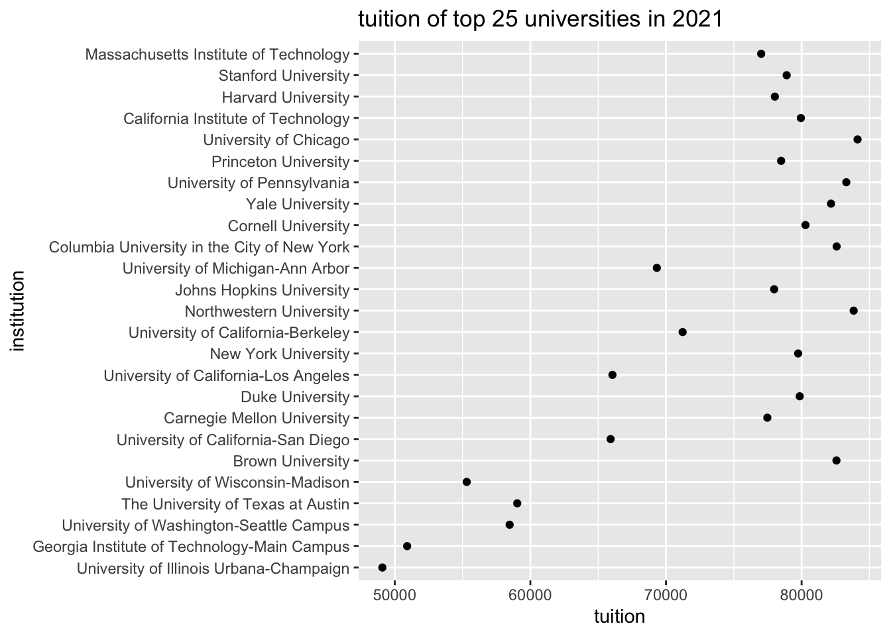 This plot explores the relation between institution rank (top 25) and average tuition. From the plot, we can see a approximately linear relationship, that university with high rank tend to have more tuition that university with low rank. This not only can be explained by high quality education requires more cost but also can be explained by the fact that most of the high rank universities are private universities which are generally have more average tuition than public universities.
4.3.3 earning v.s. tuition
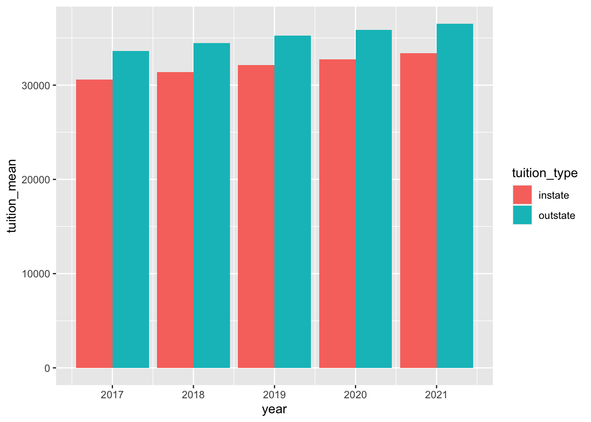 We averaged the tuition for each year from last plot (Cleveland dot plot) and drew this bar plot. We can clearly see from this plot that average in-state tuition is less than out-state tuition in any year of these five years. Also, the tuition was gradually increasing over these five years.
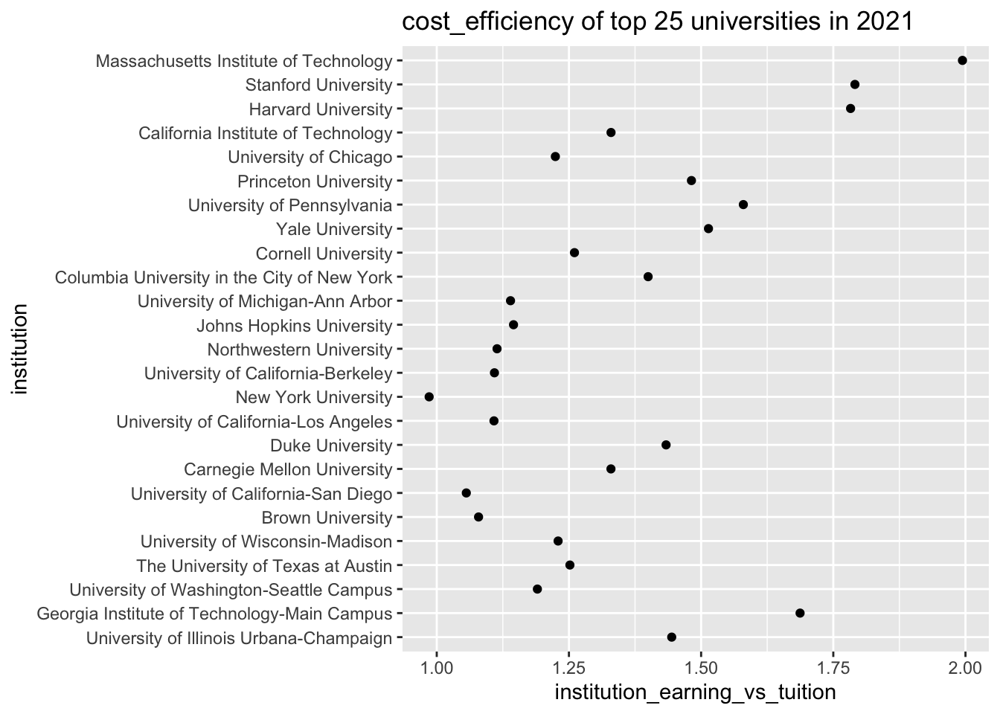 In this cleveland dot plot, we calculated the cost-efficient for each university. From the plot, we know that the top 25 university with highest cost-efficiency is MIT and the university with lowest cost-efficiency will be New York University.
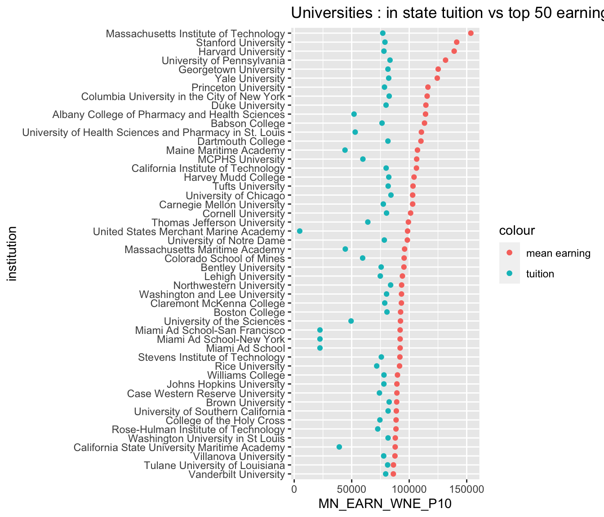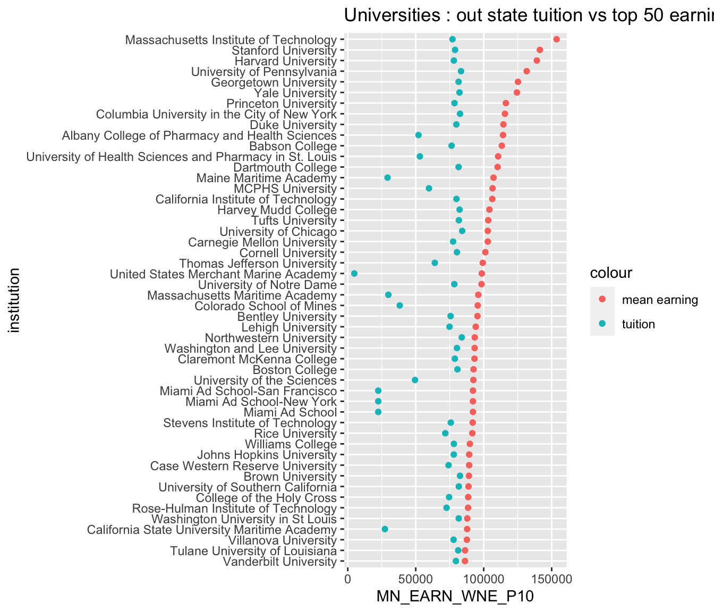 In this plot, we observe that most of university’s mean tuition are around 75000 except some outliers. We know that the cost-efficiency is, for the most of time, determined by the earning after graduation. So it’s true that the better the university the higher the cost-efficiency.
4.4 Diversity over the Pandemics
The economic impact of pandemic is profound for people fo all social class in US. From the team’s experience, racial ethnicity is, in general, correlated with financial prowess of families in US. Also gender identity could be relevant to the persuit of education since gender equality issue in education did not arise until mid 20th century. The team which to explore how does pandemic impact enrollment of people of different race in US.
4.4.1 Change of Racial Diversity over the Pandemics
The team quantifies Racial diversity of each institution using the concept of “Diversity Index” (https://www.ed-data.org/article/Ethnic-Diversity-Index). The index in a university refers to probability that we pick two people of different races if we pick any two people from that university. The team computed diversity index of each school in each state over 2017-2021: A school is considered “High Diversity” is its Diversity Index exceeds 0.5. Otherwise, the school is considered “Low Diversity”. The team computer percentage of High Diversity School in each state each year over 2019-2021 as following:
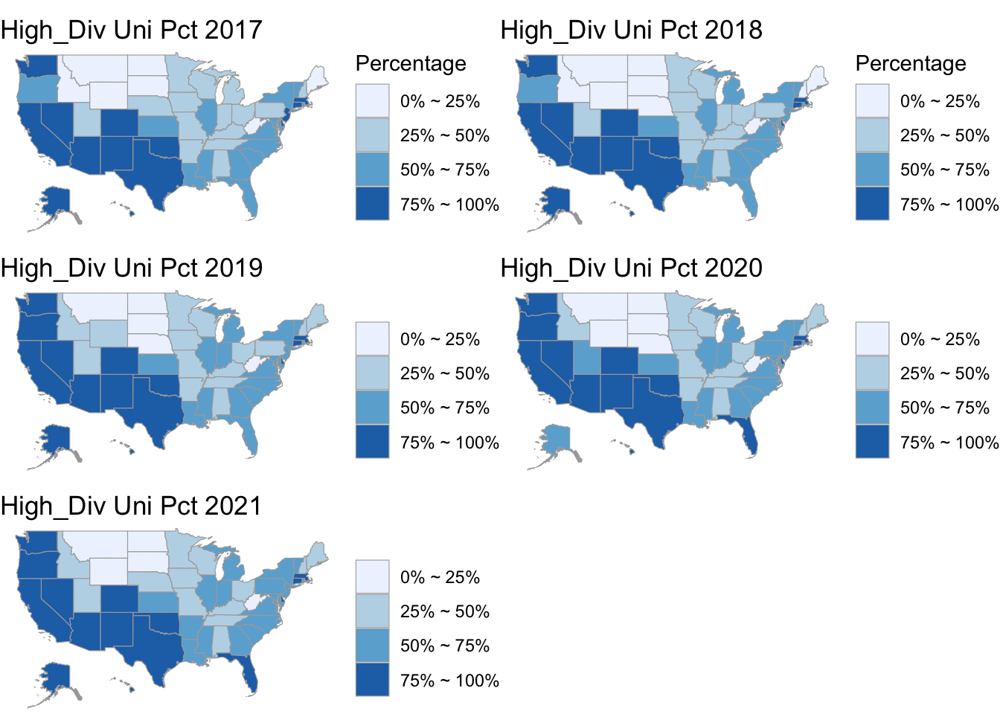
Initially the team expect decrease in diversity because Racial minority groups are more financially vulnerable and therefore would suffer from lower enrollment during the pandemics. However, the plot shows the percentage of high diversity schools experience very minor change in each state. The color change in Utah and Florida are due to small fluctuation over the verge of percentage bins. Therefore, though the team could not make inference on change of racial demographic over the pandemics, the pandemics does not impact overall racial diversity as the team assumed before analysis.
4.4.2 Change of Gender Diversity over the Pandemics
To analyze how gender diversity changes during the pandemics, the team divide schools into 3 categories. If a school has its male to female ratio higher than 1.1, the school is categorized as “Male Majority” school. If a school has its male to female ratio between 1.1 and 0.9, the school is categorized as “Neutral” school. If a school has its male to female ratio below 0.9 and above 0, the school is categorized as “Female Majority” school. The team initially assumed the gender demographics is more impervious of economic impact than racial demographics. However, a likert plot of numbers of “Male Majority”, “Neutral”, and “Female Majority” Schools shows a clear pattern of changing gender demographics. 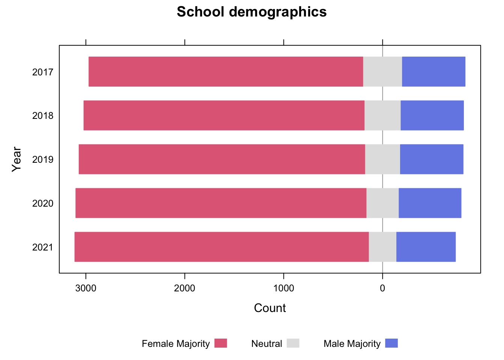 As one can observe, there are steadily increasing numbers of Female Majority school from 2017 to 2021. The number of Male majority School experience only very minor change, and the “White bar” for Gender Neutral School has shrunken. Therefore, it is safe to infer that more and more gender “Neutral” school has become “Female Majority School” over the pandemics. In fact, from the analysis of admission pattern over the pandemics, the team observed that admission of female students indeed experience increase even before the pandemics, though the ratio of admitted male to admitted female students does not seem as as radically as observed in the graph above. Looking more closely, one can see that Increase of Female Majority school took place more readily before the pandemics (before 2019), but shrinking of Neutral category took place more apparently after 2019. The team is yet to conclude what accounts for the more and more Female Majority gender demographics over the pandemics.